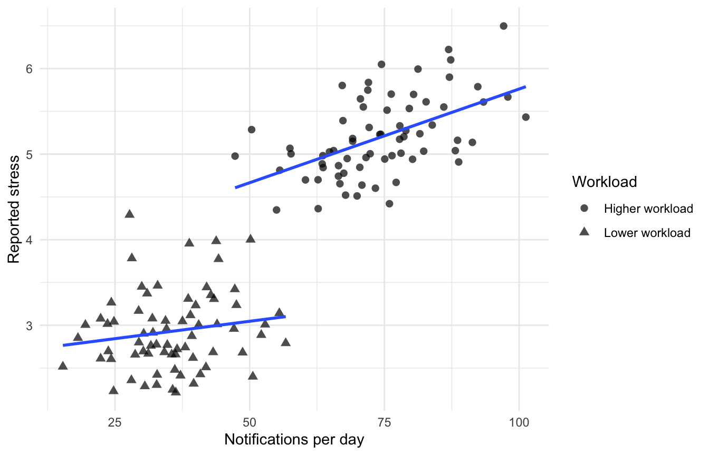
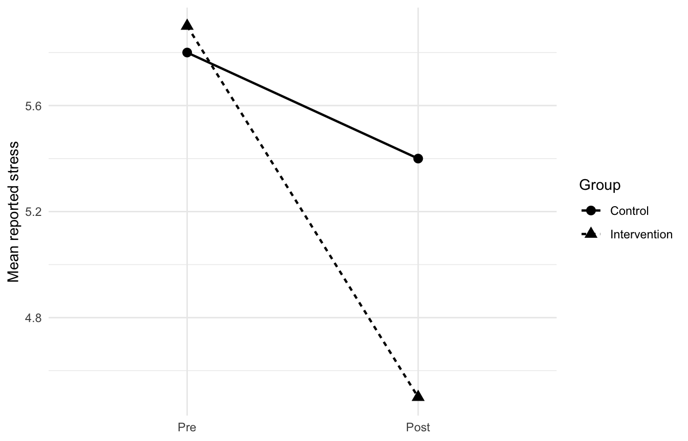
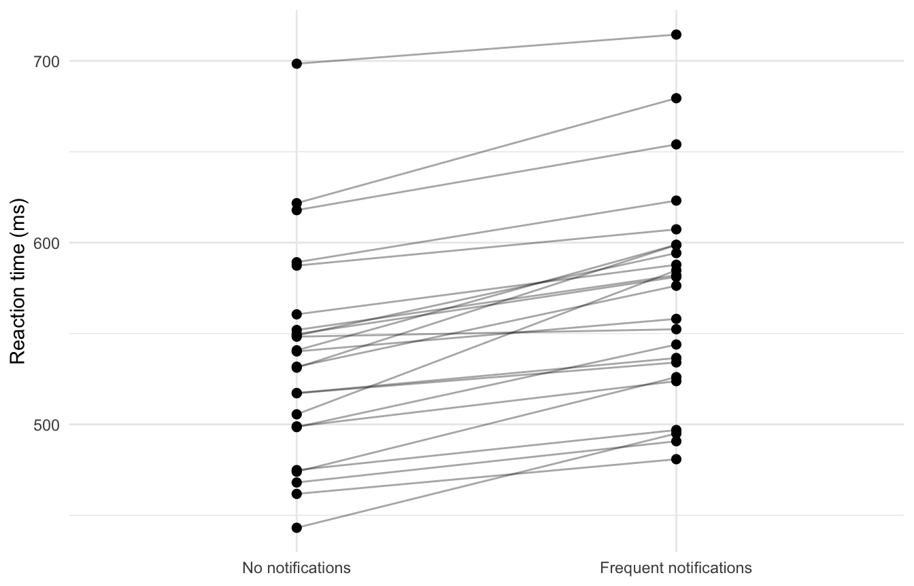
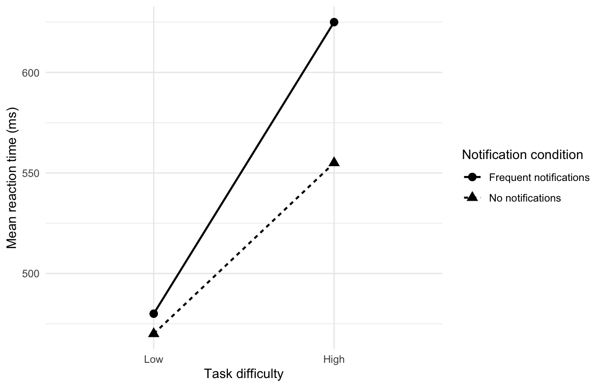

4 Experimental Designs in Psychology
by C. Costa (and G. Arcara)
Imagine we want to know whether frequent smartphone notifications make it harder to concentrate. We could ask people how many notifications they normally receive and compare this with their performance on an attention task. Alternatively, we could actively manipulate the number of notifications they receive while they complete the task. These two studies may produce very similar-looking datasets. In both cases, we could end up with one column containing the number of notifications and another containing reaction times or accuracy. Yet the conclusions we can draw from the two datasets are not the same.
The reason is the study design. A statistical analysis can describe patterns in the data, estimate relationships, and quantify uncertainty. But the way the data were generated determines what those patterns mean. Before choosing a statistical test, fitting a model, or interpreting a coefficient, we therefore need to understand where the data came from.
4.1 From a research question to a study design
A study design is the set of decisions that connects a research question to the observations used to answer it. These decisions include what we measure, whom we measure, when measurements are taken, whether something is manipulated, how participants are allocated to conditions, and how often observations are collected. Suppose we are interested in stress during everyday life. Stress is a theoretical construct: we cannot observe it directly in the same way that we can observe height, age, or time of day. Instead, we need to decide how to measure it.
We might ask participants to report how stressed they feel several times per day using an Ecological Momentary Assessment (EMA) app. We could also collect heart rate or heart-rate variability from a smartwatch, record physical activity, or administer a questionnaire at the end of each day. These measures may all be related to stress, but they are not interchangeable. An EMA rating captures a participant’s subjective experience at a particular moment. Heart rate, in contrast, may change because of stress, physical activity, caffeine, temperature, illness, or many other factors. A daily questionnaire may capture a more general retrospective judgement, but it may miss short-lived fluctuations.
The process of translating a theoretical construct into a measurable variable is called operationalisation. Operationalisation matters because the way a construct is measured helps define the question the study can actually answer.
Measurement quality: reliability and validity
Operationalising a construct is only the first step. We also need to ask whether the resulting measure behaves in a useful way. A reliable measure produces reasonably consistent information when the underlying quantity has not changed. A measure that fluctuates dramatically from one moment to the next because of sensor noise, unstable scoring, or inconsistent administration will make genuine effects harder to detect. Validity asks a different question: does the measure support the interpretation we want to make from it?
The distinction matters because a measure can be reliable without being valid. Imagine a wearable that produces a very stable proprietary “stress score”. The score may be highly reproducible, but if it largely reflects movement or heart rate rather than the psychological construct we mean by stress, consistency alone does not make it a valid measure of stress. Measurement error can also be random or systematic. Random noise tends to reduce precision. Systematic measurement error can be more problematic because it may bias comparisons. For example, if a sensor estimates heart rate differently depending on device model, and one experimental condition happens to contain more users of one model, a technical measurement difference may become a methodological confound. For behavioural technologies, measurement quality therefore includes questions such as:
- What exactly does the device or algorithm output?
- How was that output validated?
- Is measurement quality similar across participants, devices, and contexts?
- Are software or firmware versions held constant or documented?
Large datasets do not compensate for poor measurement. A million observations of the wrong quantity do not answer the intended research question.
Units matter
Behavioural technologies can generate very large datasets from relatively small numbers of people. This makes it especially important to distinguish between the experimental unit, the unit of observation, and the unit of analysis. Suppose 50 participants complete five EMA assessments per day for 14 days. If every prompt is answered, we obtain:
[ 50 = 3500 ]
rows of data. But we do not suddenly have 3,500 independent participants. The unit of observation is the entity on which a single measurement is recorded. In this example, that may be one EMA response at one point in time. The experimental unit is the smallest unit that can independently receive an experimental condition. If an intervention is assigned to each person, then the participant is the experimental unit. If entire classrooms, clinics, or workplaces are assigned to conditions, then the experimental unit may instead be the group.
The unit of analysis is the level at which the statistical analysis is carried out. This must be compatible with the design and with the dependence structure of the observations. Repeated measurements from the same person are usually more similar to one another than measurements from different people. Treating all 3,500 EMA responses as though they came from 3,500 unrelated participants would therefore exaggerate the amount of independent information in the dataset.
Smartphones, wearables, eye trackers, computer tasks, and online platforms can all generate repeated or nested observations. The design that produced those observations needs to be represented in the analysis.
4.2 Association and causality
Suppose we monitor 200 participants for one month. Their smartphones record how many notifications they receive, and an EMA app asks them to report their current level of stress several times per day. At the end of the study, periods with more notifications are associated with higher reported stress. What can we conclude? We can conclude that notification frequency and reported stress are associated. We cannot yet conclude that notifications cause stress. This distinction is central to the difference between observational and experimental research.
Observational research
In an observational study, variables are measured without the researcher directly assigning the exposure of interest. Such studies are extremely useful. They allow us to investigate behaviour in natural settings, sometimes for long periods of time, and may capture phenomena that would be difficult, impractical, or unethical to manipulate experimentally. The problem is that an observed association may have several explanations. People may receive more notifications on particularly demanding working days, while also reporting more stress. In this case, workload could influence both variables. Perhaps stressed people also check their phones more often, generating more digital interactions. Or another unmeasured factor could influence both phone use and stress.
A confounding variable is a variable that provides an alternative explanation for an observed relationship because it is related to both the exposure and the outcome. The familiar statement that correlation does not imply causation is therefore not a criticism of correlational research. It is a statement about what kind of inference the design permits.
Experimental research
In an experiment, the researcher deliberately manipulates one or more variables and observes their consequences. Instead of recording the number of notifications that participants naturally receive, we might randomly assign them to receive either frequent or infrequent notifications while completing the same cognitive task. A causal interpretation typically requires three ideas:
- the putative cause and outcome covary;
- the cause occurs before the outcome;
- plausible alternative explanations have been sufficiently controlled.
Experimental manipulation and random assignment are powerful because they directly address the third requirement.
The counterfactual idea
Causal inference can also be understood through a counterfactual question:
What would have happened to the same participant, at the same time, if they had not received the manipulation?
For any individual at a given moment, we can observe only one of these possibilities. We cannot simultaneously observe the same person both receiving and not receiving the same notification. Experimental design is therefore an attempt to construct a credible comparison for this missing counterfactual. Different design choices solve this problem in different ways.
Quasi-experimental research
Between purely observational research and fully randomised experiments are quasi-experimental designs. Here, researchers study an intervention, policy, technological change, or naturally occurring event but do not have complete control over assignment. Imagine that one university introduces an app that limits notifications during lectures while another does not. Comparing students before and after the intervention may provide valuable evidence, even though students were not individually randomised. Quasi-experiments can support stronger causal arguments than simple observational associations when the design creates a credible comparison. However, alternative explanations generally require more careful consideration than in a well-randomised experiment.
A visual example: association can be misleading
The following simulated example illustrates why an overall relationship can partly reflect a third variable. Here, both notification frequency and stress increase with workload.
The point is not that observational data are uninformative. Quite the opposite: many important behavioural questions are inherently observational. The important skill is matching the strength of the conclusion to the strength of the design.
4.3 Validity: what makes a design convincing?
The word validity appears frequently in research methods, but it refers to several related questions rather than one single property of a study.
Internal validity
Internal validity concerns whether an observed effect can plausibly be attributed to the factor we think produced it. If participants in a notification experiment differ not only in notification frequency but also in time of day, device type, instructions, or baseline ability, these alternative explanations weaken internal validity. Randomisation, appropriate control conditions, standardised procedures, blinding where possible, and careful measurement all help strengthen internal validity. Internal validity does not mean that every possible source of variation has been eliminated. Rather, it asks whether the design supports the specific comparison required for the causal claim.
External validity and generalisability
External validity concerns whether findings extend beyond the particular participants, setting, stimuli, and procedures used in the study. A tightly controlled laboratory experiment may demonstrate that notifications can disrupt attention under specific conditions. Whether the same effect occurs during commuting, studying at home, or performing a complex job is a separate question. Generalisability can concern different targets: other people, other tasks, other technologies, other settings, or other points in time.
The related term ecological validity is often used when asking how well a task or setting reflects behaviour in everyday life. A study using participants’ own smartphones in their natural environment may have high ecological relevance, but naturalism alone does not guarantee strong causal inference. Laboratory control and ecological realism are therefore not simply “good” and “bad” alternatives. They answer somewhat different methodological needs.
Construct validity
Construct validity concerns whether the variables and manipulations adequately represent the theoretical constructs of interest. If we claim to manipulate “social distraction” but compare frequent social notifications with complete silence, several things change at once: social content, notification frequency, auditory stimulation, and interruption. The manipulation may therefore be broader than the construct named in the hypothesis. Similarly, if we describe a smartwatch-derived physiological index as “stress”, we need evidence that the measure captures the intended construct rather than simply physiological arousal more generally. Construct validity connects directly to operationalisation: good experimental control cannot rescue a study if the variables do not represent the concepts the theory is about.
Statistical conclusion validity
A final question concerns whether the data and analysis support the statistical conclusion being drawn. Very noisy measurements, very small samples, inappropriate treatment of dependent observations, or highly flexible analyses can all make an estimated effect unstable or misleading. This is sometimes discussed as statistical conclusion validity. The four ideas are connected. A study can be strong in one respect and weaker in another. A carefully randomised laboratory experiment may have excellent internal validity but uncertain generalisability. A large naturalistic dataset may describe everyday behaviour very well but provide weaker causal identification. Thinking about validity therefore means asking not simply “Is this study valid?”, but valid for which inference?
4.4 Cross-sectional, longitudinal, and intensive longitudinal designs
Another dimension of study design concerns time. Two studies can both be observational, or both be experimental, while differing substantially in when and how often participants are measured.
Cross-sectional designs
In a cross-sectional design, variables are measured at one point in time, or over a short period treated as a single snapshot. For example, we might recruit 500 smartphone users, measure their average daily screen time, and administer a questionnaire assessing perceived stress. Cross-sectional studies are useful for describing prevalence, group differences, and associations. They are often relatively efficient because each participant is measured once. Their main limitation is that temporal ordering is usually unclear. If heavy smartphone use is associated with stress, a cross-sectional snapshot does not tell us whether phone use preceded stress, stress preceded phone use, or both reflect another factor.
Longitudinal designs
In a longitudinal design, the same individuals are measured across time. We might measure smartphone use and stress once per month for a year, or assess cognitive performance before and after the introduction of a new digital intervention. Repeated measurement makes it possible to study change. It can also establish temporal ordering more clearly: we can ask whether one variable measured earlier predicts another variable measured later. But longitudinal data are not automatically causal. A variable that precedes another may still be associated with an unmeasured cause of both. Longitudinal studies also introduce practical problems such as attrition, repeated-measurement effects, changes in devices or software, and changes in the broader environment during the study.
Intensive longitudinal data
EMA, smartphones, and wearables often produce intensive longitudinal data: many measurements from the same person over relatively short intervals. For example, a participant might provide six mood reports per day while a smartwatch records activity continuously for three weeks. These designs allow us to ask questions about processes unfolding within individuals. But they also require a distinction between between-person and within-person relationships. Suppose people who use their phone more than other people also report more stress on average. This is a between-person association.
A different question is whether the same person reports more stress than usual on days when they use their phone more than usual. This is a within-person association. The two relationships do not have to be the same. Conclusions about differences between people should therefore not automatically be interpreted as conclusions about changes within a person.
Pre-post designs and baseline measurements
A common longitudinal structure is the pre-post design. Participants are measured before an intervention and again afterwards. For example, stress might be measured before and after one week of using an app that suppresses non-essential notifications. The baseline measurement is useful because it tells us where participants started. But a single-group pre–post study does not by itself establish that the intervention caused the change. Stress might decline because a busy examination week ended. Participants may become familiar with the questionnaire. Extreme baseline scores may move closer to typical values on a second measurement, a phenomenon known as regression to the mean.
A concurrent control group makes the comparison stronger because both groups experience the passage of time while only one receives the intervention. The basic question then changes from:
Did the intervention group change?
to:
Did the intervention group change differently from an appropriate comparison group?
The following simulated example illustrates this distinction.

This logic is closely related to the interactions introduced later in the chapter: in many pre-post experiments, the scientifically interesting effect is whether change over time differs between groups.
4.5 Variables and experimental control
In a simple experiment, the variable deliberately manipulated by the researcher is usually called the independent variable (IV), whereas the outcome measured in response is the dependent variable (DV). Suppose participants perform a sustained-attention task while receiving either no smartphone notifications or one notification every two minutes. Notification condition is the independent variable. Reaction time, accuracy, or both might be dependent variables.
Choosing an outcome
The choice of dependent variable matters because different outcomes can describe different aspects of performance. In cognitive tasks, reaction time and accuracy are often analysed together. Looking at only one can be misleading because participants can trade speed for accuracy. A participant may respond more slowly precisely because they are trying to avoid errors. Conversely, very fast responses can come at the cost of reduced accuracy. This is known as the speed-accuracy trade-off.
Other outcomes, such as confidence ratings, eye movements, physiological responses, or computational-model parameters, may capture still other aspects of behaviour. A good design therefore specifies which outcome is most directly linked to the hypothesis rather than choosing among many measures after seeing which produces the clearest result. The terminology is useful, but real studies often contain more variables than this simple pair suggests. Participants may differ in age, sleep duration, baseline anxiety, familiarity with the task, habitual smartphone use, or many other characteristics. Variables measured because they may help explain variation in the outcome are often called covariates.
Other variables may simply introduce unwanted variation. A variable becomes particularly problematic when it varies systematically with the experimental manipulation and offers an alternative explanation for an observed effect. This is confounding. Imagine that everyone in the high-notification condition performs the experiment in the afternoon, while everyone in the low-notification condition is tested in the morning. If the groups differ in performance, notification condition is now perfectly confounded with time of day. The goal of experimental control is to make such alternative explanations less plausible.
Experimental and control conditions
Experiments often include an experimental condition and a control condition. The control condition provides a reference against which the manipulation can be evaluated. What counts as an appropriate control depends on the scientific question. If we want to know whether notifications disrupt attention compared with uninterrupted task performance, a no-notification condition is a sensible control. If we want to know whether social notifications are especially distracting, a stronger control might involve equally frequent non-social system notifications. Control is therefore not synonymous with “nothing happens”; rather, a control condition should isolate the part of the manipulation that is relevant to the hypothesis.
Passive, and active controls
Control conditions can take different forms. A passive control may simply involve the absence of an intervention. For example, one group might use a stress-management app while another group continues their normal routine. An active control receives an alternative activity designed to match features such as time, attention, contact, or expectancy without including the component thought to produce the specific effect. If an intervention app sends daily exercises, an active control might use an app with equally frequent neutral activities. The more closely the control condition matches these non-specific features, the more specifically the experiment can isolate the component of theoretical interest.
Manipulation checks
Researchers may also include a manipulation check to determine whether the experimental manipulation changed the intended experience or process. If a study manipulates notification frequency to increase perceived distraction, participants might rate how distracting they found the notifications. If the high-notification condition is not experienced as more distracting, an absent effect on attention becomes difficult to interpret. A manipulation check is informative, but it is not a substitute for the main outcome. Demonstrating that participants noticed a manipulation does not itself show that the manipulation changed cognition or behaviour in the hypothesised way.
4.6 Random assignment and random sampling
Two concepts that sound very similar solve two different problems: random assignment and random sampling.
Random assignment
Random assignment concerns what happens after participants enter a study. Participants are allocated to experimental conditions using a random mechanism. Suppose we recruit 100 participants and randomly assign 50 to a high-notification condition and 50 to a low-notification condition. Individual differences will still exist. Some people will be better at the attention task. Some will have slept badly. Some may be heavy smartphone users. But because allocation is random, these characteristics should not systematically favour one condition over the other, especially as sample size increases.
Randomisation is therefore a key tool for internal validity: it helps support the claim that differences between conditions were produced by the manipulation rather than by pre-existing group differences. Randomisation does not guarantee that two finite groups will be identical. Chance imbalances can still occur. Its strength is that the assignment mechanism itself does not systematically create them.
Random sampling
Random sampling asks a different question: how did participants enter the study in the first place? Suppose our 100 participants are all psychology students aged 18-25 who own recent smartphones. We may have conducted an excellent randomised experiment, but this does not guarantee that the result generalises to older adults, children, shift workers, or people who interact with technology in very different ways. Sampling therefore concerns external validity and generalisability.
A study can have strong internal validity and limited generalisability. Conversely, a large and representative observational dataset may generalise well to a population while offering weaker causal identification. In psychological research, true probability sampling is relatively uncommon. Convenience samples are common because they are feasible and inexpensive. This is not automatically a fatal flaw, but the target population should be described honestly.
Matching, blocking, and stratification
Sometimes researchers know in advance that a characteristic is especially important. Suppose habitual smartphone use strongly predicts susceptibility to notifications. A completely unrestricted random allocation could, by chance, place more heavy users in one condition. A blocked or stratified randomisation procedure could first group participants according to habitual smartphone use and then randomise within those groups. Matching uses a related idea by pairing or grouping participants who are similar on selected characteristics. These methods do not replace randomisation, but can improve balance on variables judged important before the experiment begins.
4.7 Between-subjects designs
In a between-subjects design, different participants take part in different experimental conditions. Suppose we recruit 120 participants for an attention experiment. Sixty receive frequent notifications while completing a sustained-attention task, and sixty complete exactly the same task without notifications. Each participant experiences only one condition.
Advantages
The major advantage is that performance in one condition cannot influence performance in another. Participants cannot learn the task in condition A and carry that learning into condition B. They cannot become tired because they have already completed another version of the same task. The effect of a manipulation cannot persist into a later condition. Between-subjects designs are therefore particularly useful when an intervention has long-lasting or irreversible effects. Imagine evaluating a week-long digital-detox intervention. Once a participant has spent a week with restricted smartphone access, it may be impossible to return them immediately to the psychological state they would have had without that experience. A between-subjects design may be more appropriate than exposing the same participant to both interventions in sequence.
Disadvantages
The main cost is inter-individual variability. People differ in baseline cognitive performance, motivation, sleep, technology use, personality, and many other characteristics. These differences contribute noise to comparisons between conditions. Random assignment protects against systematic bias, but it does not remove individual variability from the outcome. As a consequence, between-subjects studies often require larger samples than comparable within-subjects studies in which each participant serves as their own control.
4.8 Within-subjects designs
In a within-subjects design, the same participants are observed in more than one condition. Instead of assigning different groups to notification and no-notification conditions, every participant might complete the attention task twice: once with frequent notifications and once without them. Each participant now acts, to some extent, as their own control.
Why within-subjects designs can be efficient
Suppose participant A is naturally fast, participant B is naturally slow, and participant C is somewhere in between. In a between-subjects design, these baseline differences contribute to the variation between the two groups. In a within-subjects design, however, we are interested in how each participant changes across conditions. Stable individual differences are shared across both measurements. This can substantially improve statistical efficiency when repeated measurements within the same participant are correlated. The following simulated data illustrate the idea.

Notice how participants differ substantially in their absolute reaction times, but many show a change in the same direction. A paired design can focus directly on these within-person differences.
Order effects
The same feature that makes within-subjects designs efficient also creates problems: participants experience more than one condition. They may improve through practice. They may become tired or bored. Exposure to one condition may alter their response to a later condition. This is known as a carryover effect. Participants may also become more aware of the research question after experiencing multiple conditions, increasing demand characteristics. Imagine an EMA study in which people complete one week with normal smartphone use and one week with notification restrictions. Experiences during the first week may change how they use their phone during the second. The two periods are not necessarily independent episodes.
Counterbalancing
A common strategy is counterbalancing. With two conditions, half the participants can complete A followed by B, while the other half completes B followed by A. If practice improves performance in the second session, both experimental conditions now occur in the second position for some participants. Experimental condition is no longer perfectly confounded with order. With more conditions, complete counterbalancing may become impractical because the number of possible orders grows rapidly. A Latin square can distribute conditions across ordinal positions using only a subset of possible sequences.
Counterbalancing does not make order effects disappear. Instead, it aims to prevent those effects from systematically favouring one condition. Other solutions may also be useful: increasing the delay between conditions, including washout periods, using parallel task versions, modelling order statistically, or choosing a between-subjects design when carryover would be too strong.
4.9 Trials, stimuli, and repeated sampling in cognitive experiments
Many cognitive experiments have another level of structure that is easy to overlook: participants usually perform many trials. A reaction-time experiment might include 100, 300, or even 1,000 responses from each participant. These trials improve our measurement of each person’s behaviour, but they are not independent replacements for participants. They are repeated observations nested within participants.
Trial order and blocks
Trials can be presented in a random or pseudo-random order, or organised into blocks. Randomising trial order helps prevent condition from becoming systematically associated with time-on-task, fatigue, or practice. If all easy trials occur first and all difficult trials occur last, condition is partly confounded with order. Blocked presentation can nevertheless be useful. It may simplify instructions, strengthen a manipulation, or reduce task switching. But blocks can also make the experimental structure more obvious and can introduce adaptation, expectancy, or fatigue effects. The choice between randomised and blocked presentation is therefore a design decision and not merely a programming preference.
Stimuli are sampled too
Cognitive research often aims to generalise not only beyond the participants who were tested, but also beyond the particular stimuli that were used. Suppose we want to test whether emotional images capture attention more strongly than neutral images. If the experiment uses one emotional image and one neutral image, any difference could reflect those specific pictures rather than emotionality as a general property. Using multiple stimuli per condition helps separate the theoretical category from idiosyncratic properties of individual items.
This issue appears in many areas: words in language experiments, faces in emotion research, sounds in auditory experiments, images in memory tasks, and prompts or notifications in digital studies. Where possible, stimulus sets should be sampled, balanced, or counterbalanced so that a condition is not represented by a single unique item. In more advanced analyses, both participants and stimuli can be treated as sources of variability. The important design principle is already simple:
We usually want our conclusion to generalise beyond both the people and the particular items that happened to be sampled.
Participants versus trials
Increasing the number of trials can improve the precision with which we estimate an individual’s behaviour. Increasing the number of participants improves our information about variability across individuals and our ability to generalise to a population. These are not interchangeable ways of increasing sample size. A study with 10 participants and 1,000 trials per participant answers a different inferential problem from a study with 200 participants and 50 trials each, even if the total number of rows is the same. This is another reason why experimental units and nested data structures matter throughout behavioural data science.
4.10 Factorial and mixed designs
Behaviour rarely depends on only one factor. Suppose we suspect that smartphone notifications are particularly disruptive when cognitive demands are already high. We could manipulate both notification condition and task difficulty. This produces a factorial design. A 2 × 2 design might contain the following conditions:
| Low task difficulty | High task difficulty | |
|---|---|---|
| No notifications | 1 | 2 |
| Frequent notifications | 3 | 4 |
The notation 2 × 2 indicates that there are two factors and each has two levels.
Main effects
A factorial design allows us to ask whether there is an overall effect of notification condition, averaging across levels of task difficulty. This is a main effect of notifications. We can also ask whether difficult tasks lead to worse performance overall, averaging across notification conditions. This is a main effect of task difficulty.
Interactions
The most interesting question may be whether the effect of notifications depends on task difficulty. Suppose notifications add only 10 ms to reaction times during an easy task but add 70 ms during a difficult task. The effect of notifications is not constant: it changes as a function of cognitive demand. This is an interaction.

Interactions are important because they prevent us from reducing a result to a single overall statement. If an intervention works only under particular conditions, the interaction may be more informative than either main effect.
Mixed designs
A mixed design combines between-subjects and within-subjects factors. Suppose we compare habitual users and non-users of smartwatches. User group is a between-subjects factor because each person belongs to one group. Every participant then completes a cognitive task with and without real-time physiological feedback from the watch. Feedback condition is a within-subjects factor. A mixed design allows us to examine whether the within-person effect of feedback differs between the two groups.
Mixed designs are common in behavioural science because they reflect the structure of many substantive questions: people belong to different groups, but are also measured repeatedly across tasks, sessions, or conditions.
4.11 Bias and control procedures
Randomisation addresses some threats to inference, but not all of them. Research participants may change their behaviour because of what they believe the study is testing. Researchers may unintentionally behave differently toward participants in different conditions. Technology itself may behave differently across participants or conditions.
Participant expectations and demand characteristics
Suppose participants are told that an app has been designed to reduce stress. Their expectations may influence how they later rate their emotions, even if the app has little direct effect. Similarly, participants who complete both a “high distraction” and “low distraction” condition may infer the hypothesis and consciously or unconsciously change their behaviour. These are examples of demand characteristics: features of the study that reveal expectations about how participants are supposed to respond.
Experimenter expectancy
Researchers can introduce bias as well. If an experimenter knows who received an intervention, subtle differences in instructions, encouragement, timing, or interpretation may affect the outcome. This is referred to as experimenter expectancy.
Blinding
Where possible, single-blind or double-blind procedures reduce access to information about condition assignment. In behavioural research, complete blinding is not always possible. Participants will obviously notice whether their smartphone is producing frequent notifications. However, other parts of the process can still be blinded or automated. The researcher administering a post-test may be unaware of condition. Data may be analysed under neutral condition labels. Instructions can be delivered by computer rather than by an experimenter who knows the hypothesis.
The goal is not to apply the label “double blind” at all costs. The goal is to identify where expectations might influence the measurement process and limit that influence where feasible.
Standardisation
Standardisation means making procedures as consistent as possible across participants and conditions. In a laboratory study, this may involve identical instructions, testing rooms, task durations, and equipment. In technology-based behavioural research, standardisation can be more complicated. Smartphone operating systems may handle notifications differently. Screen sizes vary. Wearable devices may have different sensor sampling frequencies. A software update may change the way an app logs events halfway through data collection. These details can become methodological variables if they differ systematically across conditions or participants. A technically functioning dataset is therefore not automatically a methodologically comparable dataset.
4.12 Planning before collecting data
Many of the decisions that determine whether a study will be informative occur before the first participant is tested.
Sample size and precision
One decision concerns sample size. A study should not ideally recruit a particular number of participants only because that number is convenient or because another paper used the same number. The amount of information required depends on the design, the variability of the measurements, the size of the effect that would be scientifically meaningful, and the precision required from the estimates. The concept of statistical power captures one part of this problem. Roughly speaking, power concerns the probability that a study will detect an effect of a given size when such an effect is present.
A small study may fail to detect a meaningful effect because its estimates are too imprecise. But simply collecting a huge number of repeated measurements from a few individuals does not necessarily solve the problem, because repeated observations do not provide the same information as independent participants. This brings us back to the importance of understanding the experimental unit.
Inclusion and exclusion criteria
Researchers should also decide how observations will be included in the analysis. With behavioural technology, this can be surprisingly complex. Suppose participants are asked to wear a smartwatch for seven days. What counts as a valid day? Six hours of wear? Twelve hours? What should happen if heart-rate data are missing for long periods? Should a participant be excluded if only three of seven days are valid? Now consider an EMA study. What response rate is required? Should responses completed thirty minutes after the prompt still count as momentary assessments? How should impossible or duplicate timestamps be handled?
There may be several defensible choices. The methodological problem arises when researchers try multiple reasonable rules and retain only the rule that produces the most desirable result. Defining important criteria in advance limits this flexibility.
Outcomes and stopping rules
The same logic applies to outcomes. A smartphone study may generate dozens of variables: screen time, unlock frequency, notification count, app categories, mobility, sleep estimates, typing patterns, and subjective ratings. If one primary hypothesis is being tested, the corresponding primary outcome should ideally be identified before the analysis. Researchers should also decide when data collection will stop. Repeatedly analysing the data and ending recruitment as soon as a desired result becomes statistically significant changes the behaviour of conventional statistical tests. If sequential monitoring is planned, it should be incorporated into the design and analysis.
Missing data and data completeness
Technology-based studies often produce missing data for reasons that are scientifically meaningful. An EMA participant may ignore prompts when they are especially busy or stressed. A smartwatch may lose physiological data during vigorous movement. A phone may stop background logging because battery-saving settings were activated. Missingness should therefore not be treated only as a cleaning nuisance. Before collecting data, researchers should decide how they will monitor data completeness and what counts as an acceptable observation. Relevant questions might include:
- How much wearable time is required for a valid day?
- How long after an EMA prompt can a response still be considered momentary?
- How will technical failures be distinguished from participant non-adherence?
- When is a participant considered to have insufficient data for a planned analysis?
The statistical treatment of missing data is covered elsewhere. At the design stage, the key point is that missing data can reflect the process being studied and should be anticipated where possible.
Pilot and feasibility studies
Before launching a full experiment, researchers often conduct a pilot or feasibility study. A pilot can answer practical questions: Does the app log the intended events? Are notifications delivered consistently across devices? Is the task too long? Do participants understand the instructions? Is an EMA schedule so burdensome that response rates collapse after a few days? Pilot work is also useful for checking whether a manipulation produces the intended contrast and whether the data pipeline works from collection to analysis.
A small pilot should not usually be treated as a miniature definitive hypothesis test. Small samples provide unstable estimates of effect size. The main purpose of pilot work is often to discover design problems while they are still inexpensive to fix.
Preregistration and transparency
Preregistration provides one way of documenting decisions before the results are known. A preregistration can specify hypotheses, primary outcomes, sample-size rationale, exclusion criteria, experimental procedures, and planned analyses. Preregistration does not prevent exploration. Behavioural datasets are often rich, and unexpected patterns can be scientifically valuable. The important distinction is between confirmatory analyses, which test predictions specified in advance, and exploratory analyses, which are motivated by patterns discovered after observing the data. Both can be useful. They answer different questions.
From design to conclusion
Let us return to the question that opened this chapter: Do smartphone notifications interfere with attention? We could observe people’s natural notification behaviour and relate it to cognitive performance. This may provide a realistic picture of everyday life, but causal interpretations will remain vulnerable to confounding. We could randomly assign participants to different notification conditions. This improves control over alternative explanations. We could expose every participant to both conditions. This may increase statistical efficiency but creates order and carryover effects.
We could simultaneously manipulate cognitive load, allowing us to test whether the effect of notifications depends on task difficulty. Or we could measure attention repeatedly in daily life, producing a multilevel dataset in which moments are nested within individuals. None of these designs is universally “best”. Each design trades some advantages for others. The appropriate design depends on the research question, the population, the practical and ethical constraints, the measurement technology, and the type of inference we want to make. Before asking which statistical model to apply to a dataset, it is therefore worth asking a more basic question:
What does the way these data were collected actually allow us to conclude?
All chapters were drafted and written by C. Costa; topics and content were agreed and discussed with G. Arcara.